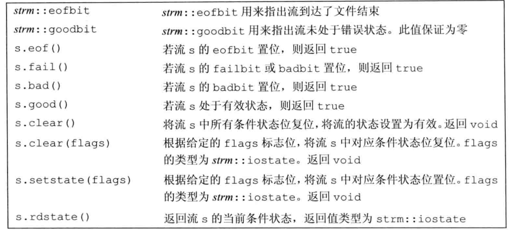

8.IO库
IO类
IO库类型和头文件
|头文件|类型|
|iostream|istream,wistream从流读取数据|
||ostream,wostream向流写入数据|
||iostream，wiostream读写流|
|fstream|ifstream,wiftream从文件读取数据|
||ofstream,wofstream向文件写入数据|
||fstream，wfstream读写文件|
|sstream|istringstream,wistringstream从string读取数据|
||ostringstream,wostringstream向string写入数据|
||stringstream，wstringstream读写流|
我们不能拷贝或者对IO对象赋值。
ofstream out1,out2; out1 = out2; //错误：不能赋值 ofstream print(ofstream); //错误不能初始化ofstream参数 out2 = print(out2); //错误：不能拷贝对象 <!--0-->流对象的rdstate成员返回一个iostate值，对应流的当前状态。setstate操作将给定条件位置位，表示发生了对应错误。


带参数的clear接受一个iostate值，表示流的新状态。为了抚慰单一的条件状态位，我们首先用rdstate读出当前条件状态，然后用位操作将所需位复位来生成新的状态。
//复位failbit和badbit，保持其他标识位不变 cin.clear(cin.rdstate() & ~cin.failbit & ~cin.badbit) <!--1-->关联输入和输出流
当一个输入流被关联到一个输出流时，任何试图从输入流读取数据的操作都会先刷新关联的输出流。
cin.tie(&cout); //将cin和cout关联在一起（默认情况下这两者是关联的） <!--2-->当一个fstream对象离开其作用域，与之关联的文件会自动关闭。（当一个fstream对象被销毁时，close会被自动调用）
文件模式


- 只可以对ofstream或fstream设定out模式。
- 只可以对ifstream或fstream设定in模式。
- 只有当out也被设定，才可以设定trunct模式
- 只要trunc没被设定，就可以设定app模式。

string流
sstream特有的操作

例子
1
2
3
4
5
6
7
8
9
10
11
12
13
14
15
16
17
18
19
20
21
22
23
24
25
26
27
28
29
30
31
32
33
34
35
36
37
38
39#include <fstream>
#include <string>
#include <vector>
#include <sstream>
#include <iostream>
#include "PersonInfo.h"
int main(){
std::vector<PersonInfo> personInfos;
std::string line,data;
std::ifstream inputFile;
inputFile.open("/Users/xuexuan/Desktop/tmp/test/123");
while(std::getline(inputFile,line)){
PersonInfo person;
std::istringstream record(line);
record >> person.name;
while (record >> data){
person.phones.push_back(data);
}
personInfos.push_back(person);
}
for (const auto &item:personInfos){
std::ostringstream formatted, badNums;
for (const auto &nums:item.phones){
if(valid(nums)){
formatted << " "<<nums;
} else{
badNums << " "<<nums;
}
}
if (badNums.str().empty()){
std::cout << item.name <<" "<<formatted.str()<<std::endl;
} else{
std::cout << item.name <<" invalid:"<< badNums.str() <<std::endl;
}
}
}
9.顺序容器
顺序容器的类型
vector\deque\list\forward_list\array\string
array是一种比内置数组更安全，更容易使用的数组类型。 array支持拷贝与赋值操作。
forward_list没有没有size操作。
选择容器的基本原则
- 除非有很好的理由选择其他容器，否则选择vector
- 如果你的程序有很多小的元素，且空间的额外开销很重要，则不要使用list或forward_list.
- 如果程序要求随机访问元素，应使用vector或deque
- 如果程序要求在容器中间插入或删除元素，应使用list或forward_list.
- 如果程序需要在头尾位置插入或删除元素，但不会在中间位置进行插入或删除操作，则使用deque。
- 如果程序只有在读取输入时才需要在容器中间位置插入元素，随后需要随机访问元素。则：
- 。。。
如果你不确定应该使用哪种容器，呢么可以在程序中只使用vector和list公共的操作：迭代器，不使用下标操作，避免随机访问。这样，在必要时选择vector和list都很方便。
容器操作


- 新标准库中容器既提供成员版本的swap，也提供非成员版本的swap。统一使用非成员版本的swap是一个好习惯。
- c.insert(p,t) 在p指向的元素之前创建一个值为t的元素，返回指向新添加元素的迭代器。
- 改变容器大小 c .resize()
- 容器操作可能使迭代器失效，因此必须保证每次改变容器的操作之后都正确的重新定位迭代器。
- 管理容量的成员函数
| c.shrink_to_fit() | 将capacity()减小为与size()相同大小 |
| c.capacity() | 不重新分配内存的话，c可以保存多少元素 |
| c.reserve() | 分配至少能容纳n个元素的内存空间 |
容器适配器
stack/queue/priority_queue
栈默认基于deque实现。
10.范型算法
大多数算法定义在algorithm中。标准库还在numeric头文件中定义了一组数值范型算法。